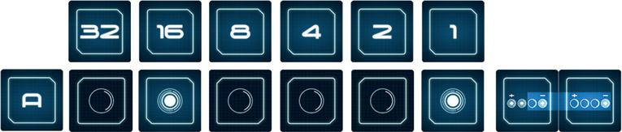
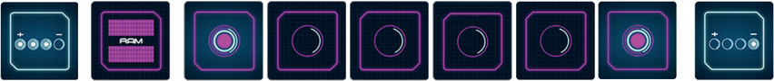

Extra bits#
MOON’s modular design allows you to expand the number of bits in its CPU, substantially increasing the complexity of the game.
The base game comes with 8 extra bits to extend the registers A, B, C and D to 5 bits or 6 bits.
Since goal cards only contain 4-bit combinations, we will need two goal cards to indicate the 5-bit or 6-bit combinations to be solved.
In cooperative mode, we will draw two goal cards when solving a goal:
You solve a goal
You show the following goal.
At the end of the round, you draw one goal card.
The goal will be made up of all the rightmost bits of the two goal cards. For example, playing with registers of 6 bits, the goal will comprise the 4 bits of the card on the right and the 2 rightmost bits of the card on the left:
In competitive mode, you will put each part of the goal to each side of your RAM module to avoid mixing them.
